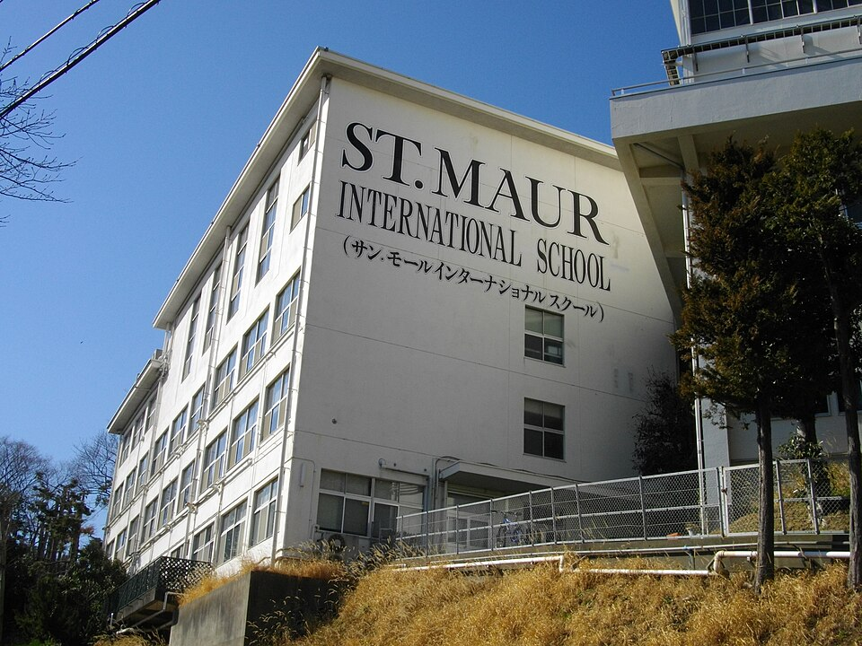

세인트모어 인터내셔널 스쿨(요코하마 야마테) · 사진: Abasaa / Wikimedia Commons, Public domain
세인트모어 인터내셔널 스쿨(Saint Maur International School, 요코하마) — 한 학교 안에 길이 여러 개입니다
1. 어떤 학교인가
· 설립 — 1872년, 프랑스 파리에 본부를 둔 가톨릭 수도회(Sisters of the Holy Infant Jesus)의 수녀들이 요코하마에 도착해 세운 학교로 알려져 있습니다. 아시아에서 가장 오래된 국제학교 가운데 하나로 소개됩니다.
· 위치 — 요코하마 나카구 야마테초(山手町). 옛 외국인 거류지가 있던 야마테 언덕으로, 도쿄가 아니라 요코하마라는 점이 통학 계획의 출발점입니다.
· 학년·성별 — 유아 과정(만 2세 반)부터 G12까지, 남녀공학으로 안내됩니다.
· 교육과정 — 유아 과정은 몬테소리, 초등은 G1~G5, 중등은 G6~G8, 고등은 G10에서 IGCSE를 치르고 G11·G12에 IB 디플로마 프로그램을 운영하는 형태로 안내됩니다. 여기에 AP 과목과 PSAT·SAT를 선택할 수 있는 길도 함께 안내됩니다.
· 프랑스어 과정 — 영어 과정과 별개로 프랑스어로 배우는 초등 과정(École Française)이 같은 학교 안에 운영되는 것으로 안내됩니다.
· 인증 — 미국의 NEASC 인증과 IB 기구 인가, 그리고 CIS 등 국제 학교 단체의 회원으로 소개됩니다.
※ 학비·정원·합격률·재학생 수처럼 해마다 바뀌는 수치는 이 글에서 다루지 않습니다. 개설 과정과 학년 구성도 연도에 따라 안내가 달라질 수 있으니 올해 요강을 직접 확인하세요.
2. 핵심 ① — 도쿄권 가톨릭 국제학교 세 곳, 무엇이 다른가
도쿄·요코하마에는 가톨릭 수도회가 세운 국제학교가 여러 곳 있습니다. 한국 가정이 자주 비교하시는 세 곳을 나란히 놓으면 차이가 분명해집니다. 성별 구성과 마지막 2년의 구조가 서로 다릅니다.
| 학교 | 위치 | 성별 | 고등 과정 |
|---|---|---|---|
| 세인트모어 인터내셔널 스쿨 (이 글의 학교) | 요코하마 야마테 | 남녀공학 | G10 IGCSE → G11·12 IB 디플로마(+AP·SAT 선택) |
| 세이센 인터내셔널 스쿨 | 도쿄 세타가야 | 여학교 | IB 디플로마 |
| 세인트메리 인터내셔널 스쿨 | 도쿄 세타가야 | 남학교 | 학교 졸업장 + IB는 선택 |
여기서 실제 결정을 가르는 것은 대개 두 가지입니다.
· 남매가 있는 가정 — 세타가야의 두 학교는 성별이 갈리므로 남매를 한 학교에 보낼 수 없습니다. 공학인 세인트모어는 이 문제가 없습니다. 통학 동선도 한 곳으로 묶입니다.
· 도쿄냐 요코하마냐 — 세인트모어는 요코하마입니다. 회사가 도쿄 도심이라면 거주지를 어디로 잡느냐에 따라 통학과 통근이 반대 방향이 될 수 있습니다. 도쿄 전반의 학교 분포와 한인 거주 지역은 도쿄 국제학교 수학·영어 과외에 정리해 두었고, 같은 요코하마의 요코하마 인터내셔널 스쿨(YIS)도 함께 보시면 비교가 쉽습니다.
3. 핵심 ② — "국제학교 = 영어 하나"가 아닙니다
이 학교의 두 번째 특징은 한 캠퍼스 안에 성격이 다른 과정이 함께 있다는 점입니다.
· 몬테소리 유아 과정 — 유아 구간은 몬테소리 방식으로 안내됩니다. 교구를 스스로 골라 활동하는 형태라, 한국식 유치원 수업을 떠올리고 가시면 "무엇을 배웠는지"가 눈에 잘 안 보입니다. 이 구간은 진도가 아니라 태도가 자라는 시기라고 보시는 편이 맞습니다.
· 영어 본 과정 — 초등·중등·고등으로 이어지는 주 과정입니다.
· 프랑스어 초등 과정(École Française) — 프랑스어로 수업하는 초등 과정이 별도로 안내됩니다. 프랑스어권에서 오는 가정을 위한 갈래이고, 한국 가정이 지원하는 일반적인 경로는 아닙니다. 다만 학교를 볼 때 "이 학교는 영어 과정 하나가 아니다"라는 점은 알고 계셔야 합니다. 후기나 안내문에서 본 이야기가 어느 과정 이야기인지 섞이기 쉽기 때문입니다.
그래서 학교에 문의하실 때는 "어느 과정의 어느 학년"인지를 먼저 밝히고 물으시는 편이 답이 정확합니다.
4. 핵심 ③ — 고등학교는 G11이 아니라 G10에서 시작합니다
한국 학부모님이 가장 많이 놓치시는 지점입니다. 이 학교는 G10에서 IGCSE를 치르는 것으로 안내됩니다. IGCSE는 학교 안에서 끝나는 시험이 아니라 외부 시험입니다. 즉 고등학교의 부담이 G11(IB 디플로마 시작)부터가 아니라 G10부터 시작한다는 뜻입니다.
이것이 실제로 영향을 주는 곳은 편입 시기입니다.
· G9 이전 편입 — 시간 여유가 있습니다. 영어와 수학 용어를 채울 구간이 남아 있습니다.
· G10 중간 편입 — 가장 주의해야 할 시기입니다. 이미 IGCSE 과목 선택이 끝나 있고 시험 준비가 진행 중인 해입니다. 지원 전에 편입생이 그 과정에 합류할 수 있는지를 반드시 물어보셔야 합니다.
· G11 편입 — IB 디플로마가 시작되는 해입니다. IB 디플로마는 2년을 통째로 이수하는 과정이라 중간 합류에 제약이 있는 것이 일반적입니다. 학교마다 규정이 다르므로 지원 전에 반드시 확인하세요. → 편입·전학 총정리
정리하면 이 학교를 보실 때 던질 질문은 이것입니다. "우리 아이가 들어가는 학년이 G10 이후인가, 이전인가." 이 한 줄로 준비의 급한 정도가 갈립니다.
5. 한국(주재원) 학생·학부모가 겪는 어려움
· 시험 형식이 두 번 바뀐다. 중등까지의 학교 내부 평가 → G10 IGCSE(외부 시험) → G11·12 IB(내부 평가 + 외부 시험)로 형식이 연이어 바뀝니다. 내용을 알아도 형식에 적응할 시간이 필요합니다. → IGCSE 과목 선택 · IB DP 점수 구조
· 생활 영어는 느는데 교과 영어가 안 는다. 회화가 빨리 늘어 안심하시는데, 점수는 교과를 읽고 설명하는 영어에서 갈립니다. → EAL(영어 지원 프로그램) · Learning Support
· 수학은 용어와 서술에서 막힌다. 한국에서 이미 배운 내용인데 알지브라·지오메트리 용어가 영어라 못 푸는 경우가 흔합니다. 답만 적으면 과정 점수를 받지 못합니다. → 알지브라 공부법
· AP·SAT 선택지에 휘둘린다. IB 디플로마를 하면서 AP 과목과 SAT까지 욕심내다 어느 쪽도 못 챙기는 경우가 있습니다. 대학 지원 방향을 먼저 정하고 나서 붙이셔야 합니다. → AP 과목 선택 · 진학 카운슬러 활용법
· 모의고사를 그냥 학교 시험으로 넘긴다. IB·IGCSE 학교의 모의고사는 대학 지원에 쓰이는 예측 성적의 근거가 되는 경우가 있습니다. → 모의고사·예측 성적
· 일본 생활과 학교 언어가 다르다. 학교는 영어로 돌아가는데 생활은 일본어입니다. 아이가 두 언어를 동시에 감당하게 되므로, 집에서 한국어를 어떻게 유지할지도 함께 생각하셔야 합니다.
6. 그래서 이렇게 준비합니다
🧭 먼저 — 아이가 "어느 구간"에 있는지 적는다
이 학교처럼 구간마다 시험 형식이 바뀌는 곳에서는 손볼 것이 달라집니다. 종이에 한 줄만 적어 보세요. "우리 아이는 지금 초등 / 중등 / G10(IGCSE) / G11·12(IB) 중 어디인가."
· 초등 구간 — 읽기 수준과 영어로 쓰인 수학 용어. 여기서 벌어 두면 뒤가 편합니다.
· 중등 구간 — 서술형 답안의 형태와 과제 습관. G10을 대비하는 구간입니다.
· G10 — IGCSE 과목별 시험 형식. 문제 유형이 정해져 있어 연습한 만큼 올라갑니다.
· G11·12 — 장기 과제의 기한 관리와 글의 구조. 점수가 몰려 있어 한 번 놓치면 회복이 어렵습니다.
📖 영어과외 — 에세이는 "구조"부터
IGCSE든 IB든 글의 구조가 점수를 정합니다. 주장·근거·해석이 한 문단 안에서 어떤 순서로 놓이는지를 익히는 훈련을 먼저 합니다. 내용이 있어도 구조가 없으면 상위 칸에 닿지 못합니다. (영어 공부법 참고)
📐 수학과외 — 용어를 붙이고, 과정을 문장으로
아이가 이미 아는 개념에 영어 용어를 다시 붙여 주는 작업부터 합니다. 그다음 풀이 과정을 영어 문장으로 적는 습관을 들입니다. IB 수학은 AA와 AI로 갈리므로 G11 진입 전에 어느 쪽이 맞는지도 함께 봅니다.
📅 학교를 방문하신다면
이 학교는 과정이 여러 갈래라 가서 물어야 정리되는 것이 많습니다. "우리 아이가 들어갈 과정과 학년", "그 학년에 자리가 있는지", "G10 편입이 가능한지", "영어 지원이 어느 학년까지 제공되는지" 네 가지입니다. 무엇을 묻고 무엇을 볼지는 오픈데이·학교 방문 준비법에 정리해 두었습니다.
7. 요코하마의 강점 — 시차 없는 화상과외
일본은 한국과 시차가 없습니다. 아이가 학교에서 돌아온 직후 시간이 한국 강사진의 수업 시간과 그대로 맞아, 일정 조정이 가장 수월한 지역입니다. 야마테 언덕에 있는 학교라 통학에 시간이 걸리는 가정이라면 이 장점이 더 큽니다. 수업을 위해 저녁에 다시 나갈 필요가 없기 때문입니다. 수업은 아이의 실제 과제와 학교가 준 채점 기준을 화면에 놓고 "어느 항목에서 깎였는지"부터 확인하는 방식이 가장 빠릅니다.
정리
세인트모어 인터내셔널 스쿨은 1872년 설립으로 알려진 요코하마 야마테의 가톨릭 남녀공학 국제학교이고, 유아 과정부터 G12까지를 운영하는 것으로 안내됩니다. 이 학교를 보실 때 질문은 셋입니다. "도쿄가 아니라 요코하마인데 통학이 되는가." "우리 아이가 들어갈 과정이 어느 갈래인가." 그리고 "입학 학년이 G10 이후인가, 이전인가." 세 번째 질문의 답에 따라 준비 일정이 통째로 달라집니다. 30분 무료 상담으로 우리 아이가 지금 어느 구간에 있는지부터 함께 짚어 보세요.